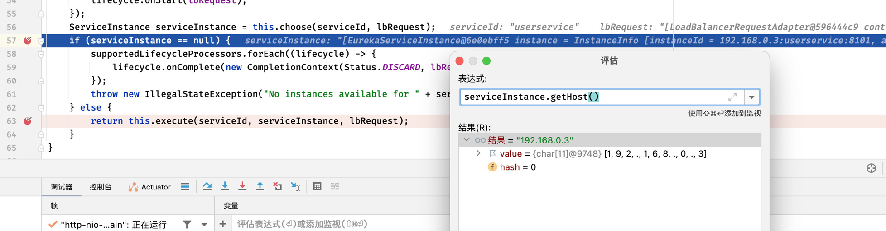
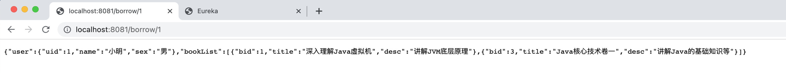

【2】LoadBalancer 详细说明¶
负载均衡到底是如何实现的？
负载均衡¶
实际上，在添加@LoadBalanced注解之后，会启用拦截器对发起的服务调用请求进行拦截（注意这里是针对发起的请求进行拦截），叫做LoadBalancerInterceptor，它实现ClientHttpRequestInterceptor接口：
@FunctionalInterface
public interface ClientHttpRequestInterceptor {
ClientHttpResponse intercept(HttpRequest request, byte[] body, ClientHttpRequestExecution execution) throws IOException;
}
主要是对intercept方法的实现：
public ClientHttpResponse intercept(final HttpRequest request, final byte[] body, final ClientHttpRequestExecution execution) throws IOException {
URI originalUri = request.getURI();
String serviceName = originalUri.getHost();
Assert.state(serviceName != null, "Request URI does not contain a valid hostname: " + originalUri);
return (ClientHttpResponse)this.loadBalancer.execute(serviceName, this.requestFactory.createRequest(request, body, execution));
}
打个断点看看实际是怎么在执行的，我看到：


服务端会在发起请求时执行这些拦截器。
那么这个拦截器做了什么事情呢，首先明确了，给过来的请求地址，并不是一个有效的主机名称，而是服务名称，那么怎么才能得到真正需要访问的主机名称呢，肯定是得找 Eureka/Nacos 获取的。
loadBalancer.execute()做了什么，它的具体实现为BlockingLoadBalancerClient：
//从上面给进来了服务的名称和具体的请求实体
public <T> T execute(String serviceId, LoadBalancerRequest<T> request) throws IOException {
String hint = this.getHint(serviceId);
LoadBalancerRequestAdapter<T, DefaultRequestContext> lbRequest = new LoadBalancerRequestAdapter(request, new DefaultRequestContext(request, hint));
Set<LoadBalancerLifecycle> supportedLifecycleProcessors = this.getSupportedLifecycleProcessors(serviceId);
supportedLifecycleProcessors.forEach((lifecycle) -> {
lifecycle.onStart(lbRequest);
});
//可以看到在这里会调用choose方法自动获取对应的服务实例信息
ServiceInstance serviceInstance = this.choose(serviceId, lbRequest);
if (serviceInstance == null) {
supportedLifecycleProcessors.forEach((lifecycle) -> {
lifecycle.onComplete(new CompletionContext(Status.DISCARD, lbRequest, new EmptyResponse()));
});
//没有发现任何此服务的实例就抛异常（之前的测试中可能已经遇到了）
throw new IllegalStateException("No instances available for " + serviceId);
} else {
//成功获取到对应服务的实例，这时就可以发起HTTP请求获取信息了
return this.execute(serviceId, serviceInstance, lbRequest);
}
}
所以，实际上在进行负载均衡的时候，会向Eureka发起请求，选择一个可用的对应服务，然后会返回此服务的主机地址等信息：

自定义负载均衡策略¶
LoadBalancer默认提供了两种负载均衡策略：
- RandomLoadBalancer - 随机分配策略
- (默认) RoundRobinLoadBalancer - 轮询分配策略
现在希望修改默认的负载均衡策略，可以进行指定，比如现在希望用户服务采用随机分配策略，需要先创建随机分配策略的配置类（不用加@Configuration）：
public class LoadBalancerConfig {
//将官方提供的 RandomLoadBalancer 注册为Bean
@Bean
public ReactorLoadBalancer<ServiceInstance> randomLoadBalancer(Environment environment, LoadBalancerClientFactory loadBalancerClientFactory){
String name = environment.getProperty(LoadBalancerClientFactory.PROPERTY_NAME);
return new RandomLoadBalancer(loadBalancerClientFactory.getLazyProvider(name, ServiceInstanceListSupplier.class), name);
}
}
接着需要为对应的服务指定负载均衡策略，直接使用注解即可：
@Configuration
@LoadBalancerClient(value = "userservice", //指定为 userservice 服务，只要是调用此服务都会使用指定的策略
configuration = LoadBalancerConfig.class) //指定刚刚定义好的配置类
public class BeanConfig {
@Bean
@LoadBalanced
RestTemplate template(){
return new RestTemplate();
}
}
接着在BlockingLoadBalancerClient中添加断点，观察是否采用指定的策略进行请求：


发现访问 userservice 服务的策略已经更改为指定的策略了。
OpenFeign实现负载均衡¶
官方文档：https://docs.spring.io/spring-cloud-openfeign/docs/current/reference/html/
Feign 和 RestTemplate 一样，也是 HTTP 客户端请求工具，但是它的使用方式更加便捷。首先是依赖：
<dependency>
<groupId>org.springframework.cloud</groupId>
<artifactId>spring-cloud-starter-openfeign</artifactId>
</dependency>
接着在启动类添加@EnableFeignClients注解：
@SpringBootApplication
@EnableFeignClients
public class BorrowApplication {
public static void main(String[] args) {
SpringApplication.run(BorrowApplication.class, args);
}
}
那么现在需要调用其他微服务提供的接口，该怎么做呢？直接创建一个对应服务的接口类即可：
@FeignClient("userservice") //声明为userservice服务的HTTP请求客户端
public interface UserClient {
}
接着直接创建所需类型的方法，比如之前的：
RestTemplate template = new RestTemplate();
User user = template.getForObject("http://userservice/user/"+uid, User.class);
现在可以直接写成这样：
@FeignClient("userservice")
public interface UserClient {
//路径保证和其他微服务提供的一致即可
@RequestMapping("/user/{uid}")
User getUserById(@PathVariable("uid") int uid); //参数和返回值也保持一致
}
接着直接注入使用（有 Mybatis 那味了）：
@Resource
UserClient userClient;
@Override
public UserBorrowDetail getUserBorrowDetailByUid(int uid) {
List<Borrow> borrow = mapper.getBorrowsByUid(uid);
User user = userClient.getUserById(uid);
//这里不用再写IP，直接写服务名称bookservice
List<Book> bookList = borrow
.stream()
.map(b -> template.getForObject("http://bookservice/book/"+b.getBid(), Book.class))
.collect(Collectors.toList());
return new UserBorrowDetail(user, bookList);
}
访问，可以看到结果依然是正确的：

并且可以观察一下两个用户微服务的调用情况，也是以负载均衡的形式进行的。
按照同样的方法，接着将图书管理服务的调用也改成接口形式：

最后的 Service 代码就变成了：
@Service
public class BorrowServiceImpl implements BorrowService {
@Resource
BorrowMapper mapper;
@Resource
UserClient userClient;
@Resource
BookClient bookClient;
@Override
public UserBorrowDetail getUserBorrowDetailByUid(int uid) {
List<Borrow> borrow = mapper.getBorrowsByUid(uid);
User user = userClient.getUserById(uid);
List<Book> bookList = borrow
.stream()
.map(b -> bookClient.getBookById(b.getBid()))
.collect(Collectors.toList());
return new UserBorrowDetail(user, bookList);
}
}
继续访问进行测试：

更新: 2025-05-13 22:50:37
原文: https://www.yuque.com/xiaoshan_wgo/codingnotes/xs1bpiavfgeqsd1p